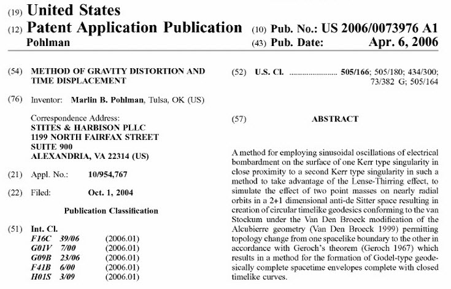
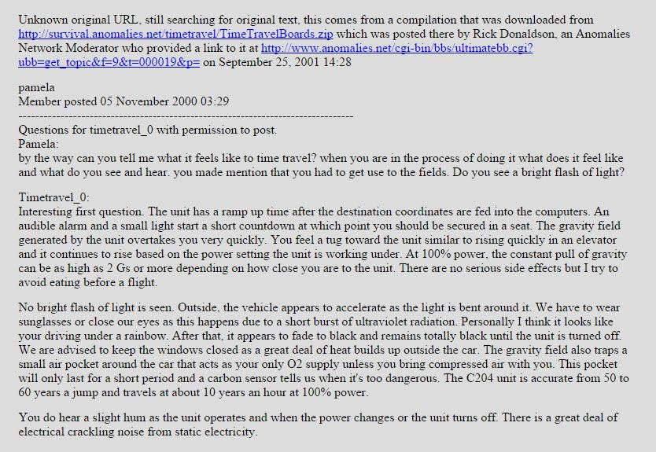

Continuing on our study of the John Titor situation, let’s look at the reactions that society has had to his presence… the John Titor Reactions…
Important Warning
The information within this series of posts are speculative. I have no factual information if this John Titor is what he claimed to be. It is presented herein as the only (or maybe, one of the only) sources that claim to be associated with the vehicles that pop in and out of our reality from time to time.
He was, as far as I know, never associated with MAJestic in any way.
Patents

John Titor’s time machine has been patented . Application dated 2004, granted in 2006. Same drawings presented. Patented by: Marlin B. Pohlman, Tulsa, Oklahoma Application number: 10/954,767 Publication number: US 2006/0073976 A1 Filing date: Oct 1, 2004.
The patent can be accessed here; https://www.scribd.com/document/260634971/John-Titor-Patent or here; http://www.freepatentsonline.com/20060073976.pdf
Below is a section from the first page from the patent.
"I claim:
1. A method for the generation of a pseudo 2+1 dimensional anti-de Sitter space comprising the steps of: creating two Kerr type positively charged rotating dilation singularities, including the steps of maintaining one of the singularities as a axis of rotation reference singularity, maintaining the other of the singularities as a target singularity, and subjecting the target singularity to a differential electron flow so as to simultaneously pass the differential electron flow above a photosphere of said target singularity in a direction of rotation thereof and contrary to the direction of rotation thereof, in order to release a directed flow of gravitons in a sinusoidal oscillation simulating a rotational effect of the target singularity around the axis of rotation provided by the reference singularity.
2. A method of generating a force around a body, comprising the steps of: employing sinusoidal oscillations of electrical bombardment on the surface of one Kerr type reference singularity in close proximity to a second Kerr type target singularity to take advantage of the Lense-Thirring effect, wherein the electrical currents employed in the bombardment are passed simultaneously across the photosphere of said reference singularity in its direction of rotation and contrary to its direction of rotation to release a directed flow of gravitons in a sinusoidal oscillation simulating a rotational effect of the target singularity around the axis of rotation provided by the reference singularity; creating timelike curves in a compact time-oriented manifold of G{umlaut over ( )}odel-type geodesically complete spacetime envelope under the Van Den Broeck modification of the Alcubierre geometry, resulting in the creation of timelike curves in a compact time-oriented manifold permitting topology change from one spacelike boundary to the other in accordance with Geroch's theorem.
Description:
FIELD OF THE INVENTION
The present invention relates to the use of technical time displacement devices, which operate by the modification of gravitational fields. These drive systems do not depend on the emission of matter to create thrust to take advantage of time dilation, but rather create a change in the curvature of space-time, in accordance with general relativity. This allows travel across topologies by warping space-time, to produce a topology change from one spacelike boundary to the other in accordance with Geroch's theorem (Geroch 1967)
THEORETICAL BACKGROUND OF THE INVENTION
The concept of gravity should be examined in the light of quantum gravity and in turn as a component of quantum physics itself. The fundamental minimal quantum of energy in quantum physics is Planck's constant; h. Thus in accordance with the energy equivalence formula E=mc2, the fundamental minimum quantity of mass (mq) can therefore be derived, from known constants by; mq=h/c2 (1). Taking this minimal mass, it is possible to show that the formation of all matter, the forces of nature and indeed space-time itself derive from this single quintessential quantity.
Thus if the number of quintessences in a system is; nq=m/mq: then the total Energy of the system is more logically given by, the energy of a single quintessence (h); directly multiplied by the number of quintessences (nq) in that system, thus
E=hnq=mc2 (1 a).
Furthermore, this minimal mass, termed quintessence, can form the basis of the existence of a quantum gravitational field in the form of a space-time lattice, from which quantum gravity may be derived from first principles. Furthermore, the conglomeration of these quintessences also accounts for the formation of the elementary particles and the forces acting between them, as in superstring theory. This concept explains the formation of matter and the forces of nature on a quantum mechanical basis and directly explains the existence of wave particle duality. Thus as nq=m/mq; the frequency of light and matter (f) is determined, directly, from the number of constituent quintessences. This leads automatically to the fundamental equation, derived from (1), f=nq=E/h, where nq is the number of quintessences, which leads directly to the frequency of both light and matter. This in turn leads directly to a Universal wave equation for matter...
Marlin B. Pohlman
What happened to the guy who patented this device is very interesting…
By creating an artificial wormhole time travel is possible. At first glance, such a thing might be too fantastic a notion to believe, yet Pohlman does hold a Bachelor of Science in Engineering Physics, an MBA from Lexington Business School, and a PhD in computer science from Trinity University. He's also a member of Portland Mensa, and is a Licensed Professional Engineer, Certified Information Systems Auditor, Certified Information Security Manager and Certified Information Systems security professional. Perhaps he invented the time machine because he discovered he hasn't enough time to squeeze in everything he wants to accomplish? -Ask Patents
One of the most curious sagas of the entire John Titor story is what happened to the person who patented the John Titor time displacement machine.
Whether the reader believes that the person who patented the invention is John Titor or an opportunist is up to the reader to determine. It is certainly a function of whether the reader believes he is a hoax or legitimate.
What is really interesting about this story is what happened once someone patented this invention. Please take note;
- A guy named Marlin B Pohlman Patents the time displacement machine and related technology.
- Pohlman applies for the patent in 2006.
- Since the initial application date, the patent status has never changed! No rulings or decisions..Nothing.
- No actual patent has been granted in this case (it was rejected in 2007 and abandoned in 2008). The official reason for the rejection is the lack of utility – meaning a lack of sufficient proof of this invention being possible/executable. (Quote: Final Rejection document from 08.08. 2007)
- March 14, 2013 . Marlin Brandt Pohlman, a 43-year-old man accused of drugging and sexually assaulting four women he met at parties, pleaded not guilty in Multnomah County Circuit Court to 25 allegations.
- Pohlman was held on a $2 million bail – a remarkably high sum for Portland.
- He is arrested and sentenced to prison followed by monitoring as a Sex Offender.
Need I remind the reader that most MAJestic operatives are retired as Sex Offenders so that they can be monitored.
Most reach this period of retirement after 20 to 30 years in the MAJestic organization. I was retired when I was 44 years old. (I am not saying that this person is part of MAJestic, but rather that this individual is retired in a manner consistent with those whom possess technical “secrets” or abilities.)
- Julian Assange accused of multiple counts of Sexual Offenses & Rape
- UFO Expert arrested on child sexual pornography
- Star Chinese scientist arrested on Child Pornography
- MD Scientist arrested on Child Pornography
- PAFB Chief Scientist arrested on Child Pornography
- Patrick AFB Chief Scientist arrested on Child Pornography
- Missile scientist was “Honey Trapped” and arrested
What is most interesting is the large amount of press that he has gotten, and the great lengths made to disparage his background.
All that being said, it really is a good patent it’s just missing exactly what it says it’s missing and that’s probably why it was rejected because microsingularities haven’t been (officially) invented or even (officially) observed yet, but they are possible.
Remember, boys and girls, "official" existence of something is what is made public to the general population. Most advanced technology is kept hidden in "carve outs" and only the "anointed" might work with the technology.
But keep in mind this patent isn’t patenting Kerr black holes, it’s patenting a machine that uses them, even if theoretically.
I think the main reason it was rejected is because he included the John Titor diagrams which are already copyrighted and trademarked by the John Titor Foundation under Larry Haber. Anyways, let’s look at what the oligarchy has to say about Marln Pohlman…
- “The top ten things you should know about Marlin Pohlman”
- “Portland computer expert accused of drugging, sexually assaulting women he met at parties”
- “Computer executive ‘raped four women he met at parties after drugging them with LSD, ecstasy and laughing gas injected through spring-loaded syringes'”
“Really? Why all the press on this guy? This shit happens every day.. One link has a ten things you need to know slides how FFS... Something is very fishy here..” -DooobieDooobieDo “Guys this shit is crazy..read my OP for the edit.. This guy had to be set up” -DooobieDooobieDo
Fraud or World-Line Connections
Investigators from Italy have tracked the ISP and tell-tale electronic signatures relative to the postings of “John Titor” to an individual named “John Rick Harber”. This was confirmed by a private investigator named Mike Lynch.
The investigator has traced John Rick Haber’s brother to a foundation called the John Titor Foundation.
- This organization owns much of the copyright information to the “John Titor” material.
- Lawrence Haber, Esq. is the attorney and general manager for the John Titor Foundation.
He was also the Chief Counsel for VISI Corp (and may still be) when the Foundation came into existence. Mr. Haber is a computer scientist, so he would of course know about the technical aspects of the computer-related information as discussed by “John Titor”.
The very nature of this (possible) disclosure makes it impossible to verify.
The investigatory effort shows and indicates real connections between an individual and a means to profit from the disclosure. However, that in no way confirms that the person trying to profit from it is the SAME person who made the disclosure. They might be related, for instance a friend that John Titor made in this world-line. A friend, mind you, who permitted John Titor to access his ISP.
+++
In any event, in my mind, it seems that the evidence for this disclosure to be a fraud is pretty strong.
That is, however…
…until I look at what I know as part of MAJestic, and the other accumulation of various visual evidences collected in the previous chapter. Then, when I pause and take a second look. Today, I am no longer so sure…
Fun Frauds and Hoaxes
Oh the funny internet.
It seems that once you post something of interest, it tends to spawn a multitude of “false positives”. These “false positives” make it extremely difficult to find the genuine article among all that clutter.
Elsewhere, I have postulated that this is one of the characteristics of a disinformation campaign. And, indeed it is. If someone posts some on the internet that needs to be secret or hidden, you propagate all sorts of fakes that dilute the ability to find the originals.
However, that does not omit the fact that there are teenagers, and hoaxers of all ages with a cheap computer and time on their hands.
Here are some of the frauds and disinformation attempts that tend to render the disclosure into obscurity;
Photos ‘Prove’ Donald Trump Is Time Traveler John Titor
Why not? President Bush was a space alien, and President Obama was Jesus Christ (though he certainly acted more like Santa Claus…).
It’s a common theme apparently. There are more than just a few videos posted on the internet with this theme.
- https://www.youtube.com/watch?v=6lFkBpvH3do
- https://www.youtube.com/watch?v=ZQnsm3SOo3g
- https://www.youtube.com/watch?v=StLLGqbAb1o
- https://www.youtube.com/watch?v=Drepv7H4rn0
John Titor Music Video
Someone apparently thought that the video of “Girls just want to have fun” by Cyndi Lauper contained a video of John Titor. How can this be you may ask? Well they stitched together some pictures of thin men with dark sunglasses and short hair throughout history. Called them time travelers, and pointed out a person with the same description in the video. Voilà!
Of course, they never discuss why in the world would anyone WANT to be in a music video in 1983. Nor do they discuss why a time traveler would want to do so either. It’s as if everyone wants to be famous and noticed. I guess everyone has the mindset of a 13 year old. How quaint.
“Real” Footage of John Titor
Of course, many of the people who put up these silly videos haven’t even read his dialog. You would think that that would be one of the first things a person would do. Right?
Here’s a good example of that.
In this case the person posts a video of a guy walking into a bright light. Interesting, and great special effects. But we happen to know by reading the dialog that John Titor outfitted a car to go to 1975 to continue on his mission. (He had to back track and retrace his steps to return to his home world-line.) We know that the Time Displacement Mechanism is quite large. We also know that there is a momentary (micro-second not multiple-second) burst of UV light… not visible light. UV-light.
This stuff cracks me up.
The person who posted this did so on 18NOV15. He stated that “He recorded this video in 2001, that’s why the quality is bad.” Without telling us how John Titor recorded himself, and who had the video during the 15 years since, and how the poster obtained the video or any of the background information regarding it.
Sites with the keyword “John Titor”
Some videos just throw about the name John Titor so they can get more “hits” and visits to watch the video. In it are some buried “evidence” of more or less curious banter. In the example below is a time traveler from the future who is interrogated. You would think that they would provide better lighting, and better filming then just a hand held smart phone. Don’t ya know?
But the eerie music and the preponderance of exclamation points in the dialog are a nice touch… (If you were a 5 year old.)
More Fake John Titor(s) – Retirement, Book Deals, Movies, Etc.
There are numerous individuals who are trying to capitalize on the “John Titor” saga. One even has his name. However, they are all hoaxes. It’s all nonsense. For purposes of clarity, there is only one John Titor with only one disclosure event. That event lasted for a brief period of time centered around the year 2000. Anything else is nonsense.
Here is a typical “fake” John Titor. Apparently this one is involved in more than just an Internet video, but has a book deal, and even a potential movie. My goodness! Go watch the nonsense here;
I have listened to some of these individuals who proclaim to be John Titor who returned back for “retirement”. Their stories do not even match up with the original John Titor at all. I wonder if they even ever did their homework.
For instance, John Titor (real) stated that there isn’t any “Global Warming”, the fake wanna-be John Titor claims that he returned to 2017 due to “Global Warming”. (Oh brother!)
The original John Titor did not want to tell anything about the future events that would happen, however the fake John Titor is full of all kinds of stories how Trump will hold two terms etc.
Seriously, moving to a different world-line for retirement is not a realistic scenario at the least;
- Friends, family, dogs, cats, and possessions would have to be discarded, never to ever see again. The fake John Titor has no problem with this.
- The fake John Titor thinks it is just fine to move to a different time and place and adapt so easy and comfortably. Cultural differences are fine for a short visit, but never fun when long term occupation is concerned. Don’t think so? Try living in Guangdong, China from Boston for six months. (And, even after all these years, I just can’t get over the lack of automats, and the crazy idea that potatoes are served with eggs. Potatoes! Of all things. At least in China they realize that breakfast should be served with beans of some sort…such as YouTiao, or DouJiang.)
- Why move to 2017? According to original John Titor, it was not a desirable time, even if the world-line was altered. In other words, why retire right before World War III?
- Retire to another world-line and write a book and make videos about it? Come on! You want to keep your knowledge and skill-sets quiet. At least until you are old and in your retirement years.
- According to the fake John Titor he has the displacement mechanism in his garage. So, his employer would just give that piece of equipment to him? So that he can show it to everyone on this time line?
I suppose that upon my demise that there would be those who pretend to be me and spout fake nonsense after this blog is terminated. Well, dear reader, do not be fooled. There is only ONE manuscript. This is it. I promise you that I won’t do anything else, even if somehow they exhume my body, resuscitate me and offer me a contract in payment. I won’t do it. I PROMISE. All and any subsequent writings, videos, audio, and photos will not come from me. I will be dead. Dead as a cold possum lying in the hot Texas heat alongside the road.
Latest updates

From reddit; As we know, John Titor, JT, allegedly left our timeline in the year 2001, leaving behind little, except for a few items to select individuals.
In the years since, the story has had its highs and lows, the most recent major spike sometime around 2010, over five years ago, when Lawrence H. Haber, supposed attorney for JT’s mother in our timeline, was found to be in connection with the John Titor Foundation, founded in 2003.
The trail’s been pretty cold ever since. A new website popped up in 2012, but I haven’t heard of anyone who’s been able to decode it; it clearly has something to do with multiple John’s somehow using the original posts to accomplish something. The case seems to have gone cold.
Links
- The John Titor Story (Probably the best summary available).
- John Titor: The Time Traveler From 2036. Why people believe John Titor. Published on Apr 21, 2017. To this day, those who spoke to him still wonder who he was, he left a lasting impression and people were very taken with what he had to say, he seemed very ahead of Time and could answer any question, remember this was a time before you could simply ‘google’ answers.
- John titor Predictions (That came true.) This is a very good video listing many things that John Titor predicted that actually came true. Many or even most of what is listed here in this video is not covered in this manuscript. Published on Nov 28, 2014. I wish he would post an updated version after the 2016 election.
- Time Travel: The Story of John Titor | Digging Deeper (Video summary)
Conclusion
“Some theorize that John Titor went back to 1973-1975 and just told the guy working on the IBM 5100 dating system how to deal with Y2K.” -Ren
In my mind, I happen to believe his story. I do believe that he is leaving certain things out. However, there are numerous tell tale signs that indicate validity.
- He certainly went to a lot of effort to (physically) construct the “Time Displacement Mechanism” for a mere hoax. After all, he would have at the bare minimum have been expected to have taken more than two photos of it.
- The point above also includes the technical cross section of the mechanism.
- The point above includes photos of elements of the instruction manual.
- The photo of the laser light bending outside the open window of the vehicle during operation is both convincing and difficult to fake using 1998 software (by most computer users at the time). Indeed who would even think of such an effect to fake? BTW, How could you fake that effect?
- Manuals show evidence of manual (non-electric) typewritters using basic computer graphics found on pre-windows 98 systems. This is in full compliance with the John Titor story.
- His disclosure’ reactions maintains the core indicators of a disinformation campaign.
- He predicted the social & political trends accurately.
- He predicted the American police state accurately.
- He stated that one of the strangest American futures was one in which New York was without a prominent skyscraper (The World Trade Center which disappeared in 9-11-2001.). Note that he did not think that that would be the future for the United States. He expected that the world-line would maintain the same path to civil war followed by global nuclear war. The only thing that would be different was that there would not be any civil disruption associated with Y2K, and his parents would stay alive through it. However, what actually occurred is his meddling in the future brought a more extreme future (from his point of view). Alternatively, alternatively, he about this future all alone, but did not want to mention it.
- The society today, and the social / political trends are what would be in place if he did thwart the Y2K fiasco.
Finally,
- There is substantial evidence from automobile cams, road and traffic cams, and smart phones that vehicles are popping in and out of our reality on roads. This is the ONLY disclosure where someone offers an explanation as to what all this actually is.
The implications of this can alter our perception of the statist view of our world. It is a world that is constantly changing in accordance with MWI and is constantly undergoing changes in direction due to interference’s from other world lines. Additionally the influences of time travel abound. Finally, there are other extraterrestrial species that have perfected these techniques as well, and they too place a hand in the shaping of the world that we all communally perceive.
Fourth of multiple Posts
This post is the fourth of a series of posts related to John Titor. The other posts are;


Conclusion
Our reality is not what we think it is. I am not the only person who has disclosed that there are others, and other organizations that can enter and leave our reality at will. Another person who made this claim went by the name John Titor.
Only where as, I claim to be part of MAJestic and was employed as part of human sentience management, John Titor claimed to be a person who was part of another world-line. Together, we both claim that the MWI is real, and we utilize it to perform dimensional egress for our own purposes.
- I claim that it is a tool that is used to manage human sentience evolution.
- John Titor claims that he utilized the time variable to conduct acquisition activities in the past.
He claimed that on that world-line, the United States was fundamentally different after a rapid series of events in the late 1990’s. He claimed that he needed to perform some acquisition of certain technical devices through the use of the time-variance option in dimensional travel.
This is the fourth of a multi-part post.
Take Aways
- John Titor claimed to be a time traveler.
- He utilized dimensional travel to move in and out of the baseline reality.
- As such, he visited our world-line to acquire some technology needed on his world-line.
- That technology was produced in “our” past. Thus the idea that it involved “time travel”.
MAJestic Related Posts – Training
These are posts and articles that revolve around how I was recruited for MAJestic and my training. Also discussed is the nature of secret programs. I really do not know why the organization was kept so secret. It really wasn’t because of any kind of military concern, and the technologies were way too involved for any kind of information transfer. The only conclusion that I can come to is that we were obligated to maintain secrecy at the behalf of our extraterrestrial benefactors.


MAJestic Related Posts – Our Universe
These particular posts are concerned about the universe that we are all part of. Being entangled as I was, and involved in the crazy things that I was, I was given some insight. This insight wasn’t anything super special. Rather it offered me perception along with advantage. Here, I try to impart some of that knowledge through discussion.
Enjoy.


MAJestic Related Posts – World-Line Travel
These posts are related to “reality slides”. Other more common terms are “world-line travel”, or the MWI. What people fail to grasp is that when a person has the ability to slide into a different reality (pass into a different world-line), they are able to “touch” Heaven to some extent. Here are posts that cover this topic.


John Titor Related Posts
Another person, collectively known by the identity of “John Titor” claimed to utilize world-line (MWI egress) travel to collect artifacts from the past. He is an interesting subject to discuss. Here we have multiple posts in this regard.
They are;